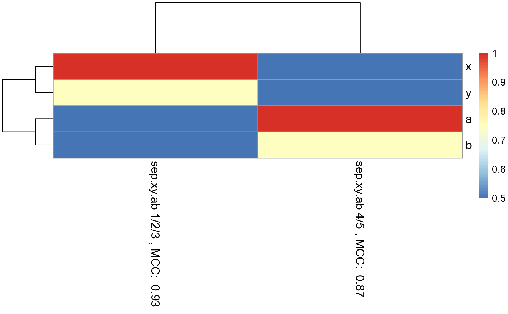

RandomForestClassificationPercentileMatrixForPheatmap.RdRandomForestAutomaticMtryAndNtree() or randomForest() is used on each subset of the data. For each subset of the data: A random forest model is generated. This random forest model is used to make a single column in the final matrix which can be used to generate a pheatmap.
RandomForestClassificationPercentileMatrixForPheatmap( input.data, factor.name.for.subsetting, name.of.predictors.to.use, target.column.name, seed, should.mtry.and.ntree.be.optimized = FALSE )
| input.data | A dataframe. |
|---|---|
| factor.name.for.subsetting | String to specify name of column to use for subsetting. The column should be a factor. Each column of the generated pheatmap will correspond to a level in the factor. |
| name.of.predictors.to.use | A vector of strings to specify name of columns to use as predictors for random forest model. Each column should be numeric. |
| target.column.name | A string to specify the column with values the random forest model is trying to predict for. The column should be a factor. |
| seed | A number to set for random number generation. |
| should.mtry.and.ntree.be.optimized | A boolean to indicate if RandomForestAutomaticMtryAndNtree() should be used to optimize ntree and mtry. Default is FALSE. |
A list with three objects:
A numerical matrix that can be used for pheatmap generation.
A list of subset data sets for each column in the heatmap matrix.
A list of vectors containing the predictions for each column in the heatmap matrix. These values are used to calculate the MCC.
A list of RF objects, each object corresponding to one column in the heatmap matrix.
In each column of the final matrix, the Matthew's Correlation Coefficient (MCC) is calculated and displayed in the column name to specify the performance of the model to predict the target in that particular data subset. Each column of the final matrix also has rows, with each row specifying a single predictor used. The mean decrease in gini index for each feature is inputted this function. Within each column the mean decrease in gini index is converted to a percentile, with the feature with the highest mean decrease in gini index receiving a 100th percentile. The RandomForestClassificationGiniMatrixForPheatmap() function is used for this function.
Other Classification functions:
CVPredictionsRandomForest(),
CVRandomForestClassificationMatrixForPheatmap(),
GenerateExampleDataMachinelearnr(),
LOOCVPredictionsRandomForestAutomaticMtryAndNtree(),
LOOCVRandomForestClassificationMatrixForPheatmap(),
RandomForestAutomaticMtryAndNtree(),
RandomForestClassificationGiniMatrixForPheatmap(),
eval.classification.results(),
find.best.number.of.trees()
#Make example data where samples with 1, 2, and 3 in their ID names can be #predicted using features x and y, while samples with 4 and 5 in their ID names #can be predicted using features a and b. id = c("1a", "1b", "1c", "1d", "1e", "1f", "1g", "2a", "2b", "2c", "2d", "2e", "2f", "3a", "3b", "3c", "3d", "3e", "3f", "3g", "3h", "3i", "4a", "4b", "4c", "4d", "4e", "4f", "4g", "5a", "5b", "5c", "5d", "5e", "5f", "5g") x = c(18, 21, 22, 24, 26, 26, 27, 30, 31, 35, 39, 35, 30, 40, 41, 42, 44, 46, 47, 48, 49, 54, 1, 1, 1, 1, 1, 1, 1, 1, 1, 1, 1, 1, 1, 1) y = c(10, 11, 22, 15, 12, 13, 14, 33, 39, 37, 44, 40, 45, 27, 29, 20, 28, 21, 30, 31, 23, 24, 1, 1, 1, 1, 1, 1, 1, 1, 1, 1, 1, 1, 1, 1) a = c(1, 1, 1, 1, 1, 1, 1, 1, 1, 1, 1, 1, 1, 1, 1, 1, 1, 1, 1, 1, 1, 1, 18, 21, 22, 24, 26, 26, 27, 40, 41, 42, 44, 46, 47, 48) b = c(1, 1, 1, 1, 1, 1, 1, 1, 1, 1, 1, 1, 1, 1, 1, 1, 1, 1, 1, 1, 1, 1, 10, 11, 22, 15, 12, 13, 14, 27, 29, 20, 28, 21, 30, 31) sep.xy.ab = c("1/2/3", "1/2/3", "1/2/3", "1/2/3", "1/2/3", "1/2/3", "1/2/3", "1/2/3", "1/2/3", "1/2/3", "1/2/3", "1/2/3", "1/2/3", "1/2/3", "1/2/3", "1/2/3", "1/2/3", "1/2/3", "1/2/3", "1/2/3", "1/2/3", "1/2/3", "4/5", "4/5", "4/5", "4/5", "4/5", "4/5", "4/5", "4/5", "4/5", "4/5", "4/5", "4/5", "4/5", "4/5") actual = as.factor(c("1", "1", "1", "1", "1", "1", "1", "2", "2", "2", "2", "2", "2", "3", "3", "3", "3", "3", "3", "3", "3", "3", "4", "4", "4", "4", "4", "4", "4", "5", "5", "5", "5", "5", "5", "5")) example.data <- data.frame(id, x, y, a, b, sep.xy.ab, actual) #dev.new() plot(example.data$x, example.data$y)results <- RandomForestClassificationPercentileMatrixForPheatmap( input.data = example.data, factor.name.for.subsetting = "sep.xy.ab", name.of.predictors.to.use = c("x", "y", "a", "b"), target.column.name = "actual", seed = 2) matrix.for.pheatmap <- results[[1]] pheatmap_RF <- pheatmap::pheatmap(matrix.for.pheatmap, fontsize_col = 12, fontsize_row=12)#The pheatmap shows that the points in groups 1, 2, and 3 can be predicted #with features x and y. While points in group 4 and 5 can be predicted with #features a and b. #dev.new() pheatmap_RF